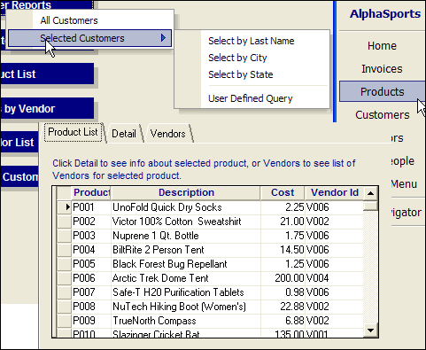

Applications
In Alpha Anywhere, the term application refers to a collection of layouts and operations that have been linked together using buttons, letting you bypass the Control Panel. Applications are often designed by developers for users with little or no Alpha Anywhere experience. Using buttons and forms, you can build a navigational system that might print layouts, run operations, and open other forms.

See Also
Alpha Anywhere Basics, Application Development Tools